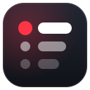

YT Curated FeedYT Curated Feed replaces YouTube's homepage with new videos from the channels you picked, newest first. No Shorts spiral, no autoplay chain, no "one more video" at 2 a.m.
Click the extension icon → Channels → Load my subscriptions. It reads your channel list from YouTube, right in your browser. No YouTube account? Add any channel by its @handle with +.
Tick only the creators you actually want: your lectures, courses, the two podcasts you love. Fewer is better.
Your homepage is now your feed: the last 7 days from those channels, newest first. Nothing else gets in.
Pause your YouTube watch history and YouTube stops building a profile of you. Its homepage goes blank, and YT Curated Feed fills it with your channels. You keep a great homepage and lose the rabbit hole.
| YouTube Custom Feeds | YT Curated Feed | |
|---|---|---|
| Who picks the videos | YouTube's AI, from your prompt | You, by channel |
| Watch history | Must be on | Works with it off |
| Availability | Rolling out in the US | Everywhere, today |
| Shorts, autoplay, end screens | Still there | Off with one toggle |
Everything is in the extension popup under Focus. Prefer YouTube's homepage with a small panel on top? Switch the homepage to Compact there.
No ads, no data selling, no premium tier. If this gave you some hours back, consider buying me a coffee.